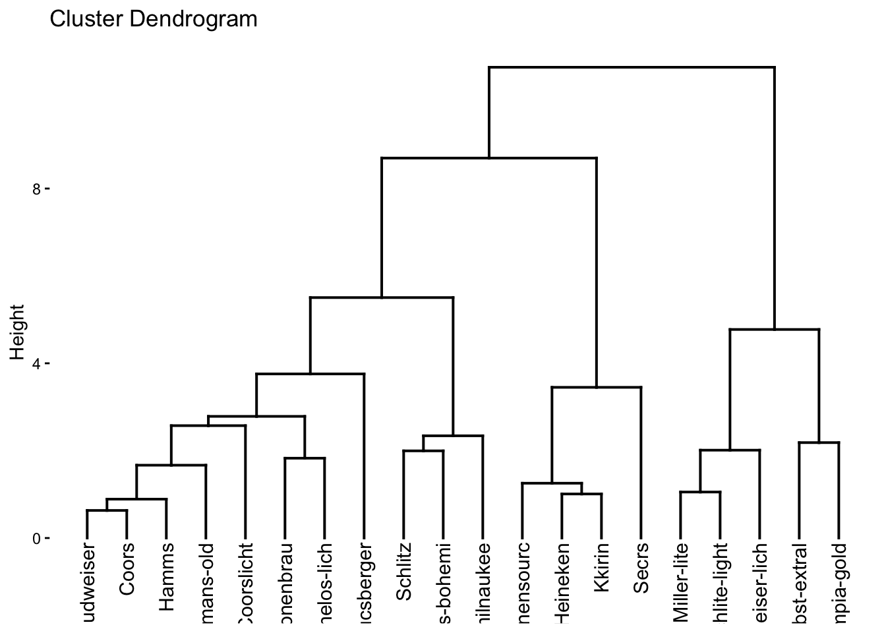
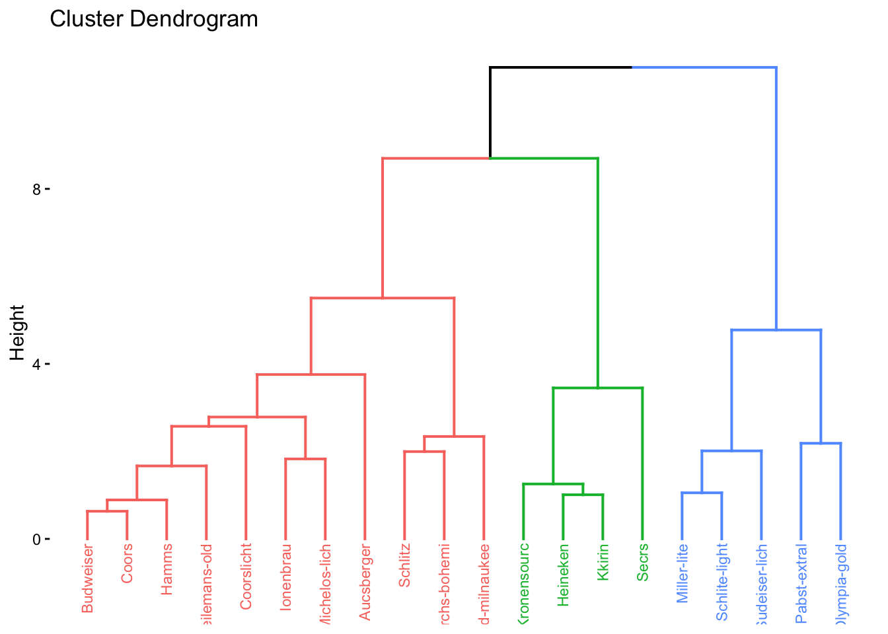
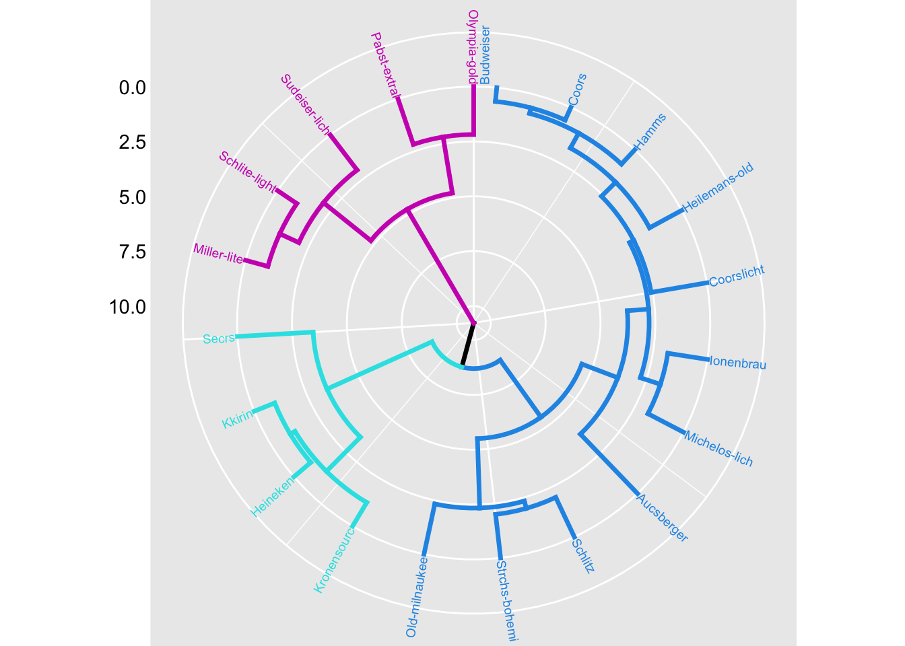
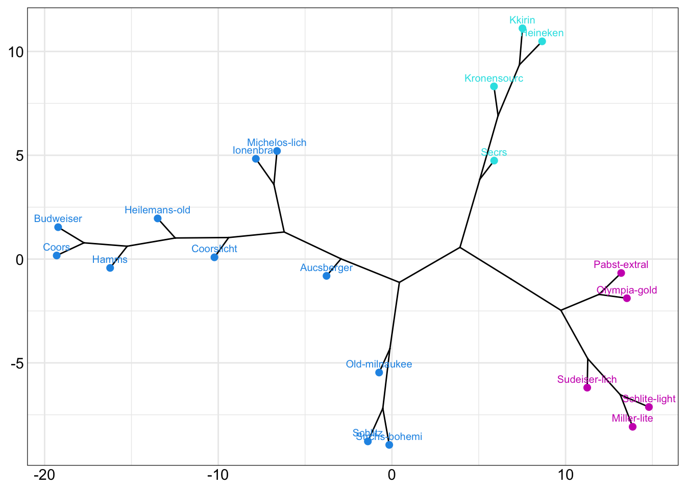
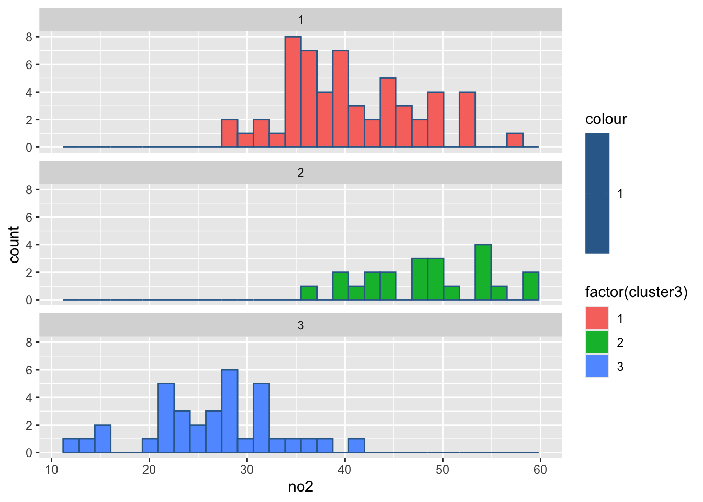
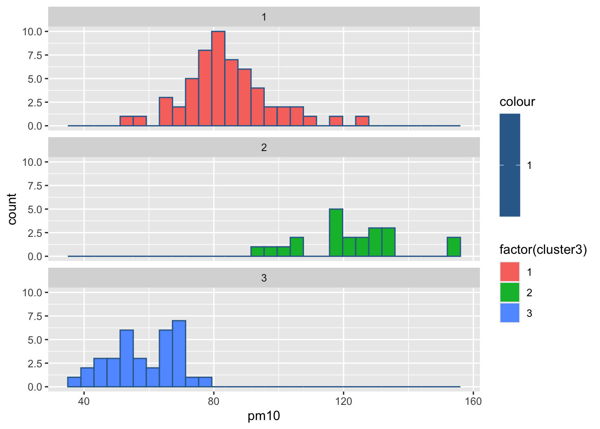

点击下载数据文件: ex4.1.xlsx
点击下载数据文件: ex4.1.xlsx #安装包
#install.packages("tidyverse")
#install.packages("dendextend")
#install.packages("cluster")
#install.packages("purrr")
#install.packages("readr")
#install.packages("readxl")4 聚类分析习题答案
P75, textbook ex4.1
将ex4.1.csv另存为ex4.1.xlsx，再导入。
#导入数据
library(readxl)
library(tidyverse)
ex4_1 <- read_excel("ex4.1.xlsx") %>% as.data.frame()
#给数据框添加行名
rownames(ex4_1) <- ex4_1$brand
# Agglomerative Nesting (Hierarchical Clustering)
# 加载包cluster
library(cluster)
ex4_1.hc <- agnes(ex4_1, # 数据框
stand = TRUE, # 对变量进行标准化变换
metric = "euclidean", # 个案之间的距离测度
method = "ward" # 类间距离定义
)
#查看聚类模型
ex4_1.hcCall: agnes(x = ex4_1, metric = "euclidean", stand = TRUE, method = "ward")
Agglomerative coefficient: 0.8360097
Order of objects:
[1] Budweiser Coors Hamms Heilemans-old Coorslicht
[6] Ionenbrau Michelos-lich Aucsberger Schlitz Strchs-bohemi
[11] Old-milnaukee Kronensourc Heineken Kkirin Secrs
[16] Miller-lite Schlite-light Sudeiser-lich Pabst-extral Olympia-gold
Height (summary):
Min. 1st Qu. Median Mean 3rd Qu. Max.
0.6316 1.4611 2.1845 3.1149 3.6032 10.7767
Available components:
[1] "order" "height" "ac" "merge" "diss" "call"
[7] "method" "order.lab" "data" #查看agglomerative coefficient聚合系数，越接近于1，代表聚类结构越强
ex4_1.hc$ac[1] 0.8360097#保存聚类结果
ex4_1$cluster <- cutree(ex4_1.hc, k=3)#绘制树状图dendrogram
# install.package("factoextra")
library(factoextra)
fviz_dend(ex4_1.hc)
fviz_dend(ex4_1.hc, k= 3, cex = 0.6)
# 自定义树状图分支及标签颜色、字体、添加矩形框
fviz_dend(ex4_1.hc,
k = 3, # 分三类
cex = 0.7, # 标签字体
k_colors = c(4,5,6),#分支颜色
color_labels_by_k = TRUE, # 标签上色
rect = TRUE, # 添加矩形框
rect_fill = TRUE, #矩形框底色
lower_rect = -6, #矩形框下沿
lwd = 1.2, #线条宽度
ggtheme = theme_minimal() #主题色
)# 圆形树状图
fviz_dend(ex4_1.hc,
k = 3, # 分三类
cex = 0.5, # 标签字体
k_colors = c(4,5,6),#分支颜色
color_labels_by_k = TRUE, # 标签上色
lwd = 1.2, #线条宽度
type = "circular", #圆形
ggtheme = theme_gray() #主题
)
# 支流树状图
fviz_dend(ex4_1.hc,
k = 3, # 分三类
cex = 0.7, # 标签字体
k_colors = c(4,5,6),#分支颜色
color_labels_by_k = TRUE, # 标签上色
type = "phylogenic", # 支流
ggtheme = theme_bw() #主题
)
dend.ward <- ex4_1 %>%
select(热量:价格) %>%
scale() %>%
dist() %>%
hclust("ward.D")%>%
as.dendrogram()
dend.average <- ex4_1 %>%
select(热量:价格) %>%
scale() %>%
dist() %>%
hclust("average") %>%
as.dendrogram() library(dendextend)
tanglegram(dend.ward,dend.average,
k_labels = 3,
k_branches = 3,
main_left = "ward.D linkage",
main_right = "average linkage",
sort = T,
margin_inner = 6,
type = "t",
highlight_distinct_edges = F,
highlight_branches_lwd = F,
main = paste("entanglement =",
round(entanglement(
dend.ward,dend.average), 2)),
cex_main = 1.2
)#完全一致的分类结果，缠绕系数等于0
dend.ward2 <- ex4_1 %>%
select(热量:价格) %>%
scale() %>%
dist() %>%
hclust("ward.D2") %>%
as.dendrogram()
tanglegram(dend.ward,dend.ward2,
k_labels = 3,
k_branches = 3,
main_left = "Ward.D Linkage",
main_right = "Ward.D2 Linkage",
margin_inner = 6,
highlight_distinct_edges = F,
highlight_branches_lwd = F,
main = paste("entanglement =",
round(entanglement(
dend.ward,dend.ward2,), 2)),
cex_main = 1.2
)P75, textbook ex4.3
#避免ex4.3.csv导入时汉字会变乱码的问题
#在Excel中将教材配套的ex4.3.csv另存为ex4.3.xlsx
#导入"ex4.3.xlsx"文件
library(readxl)
library(tidyverse)
ex4_3 <- read_excel("ex4.3.xlsx") %>%
as.data.frame() %>% #保存为数据框
rename(city = ...1, so2 = x1, no2 = x2, pm10 = x3,
co = x4, o3 = x5, pm2.5 = x6, good = x7)New names:
• `` -> `...1`#创建数据框elbow, 9行2列，列名分别为k和tot_withinss
#用于存放分类数k，分2-10类
#以及within-group sum of squares（tot_withinss），组内平方和
#用于绘制elbow plot, tot_withinss下降最快处，即K值
elbow <- data.frame(matrix(ncol = 2, nrow = 9))
colnames(elbow) <- c('k', 'tot_withinss')
#K均值聚类,k= 2,3,4,5,6,..10
for (i in (2:10)) {
ex4_3_kmeans <-
ex4_3 %>%
select(so2:good) %>%
scale() %>%
kmeans(centers = i)
ex4_3[, paste0("cluster",i)] <- ex4_3_kmeans$cluster
print(paste("Number of Clusters:", i))
print(ex4_3_kmeans$tot.withinss)
print(table(ex4_3_kmeans$cluster))
elbow[i-1,1] <- i
elbow[i-1,2] <- ex4_3_kmeans$tot.withinss
}[1] "Number of Clusters: 2"
[1] 425.6854
1 2
65 48
[1] "Number of Clusters: 3"
[1] 307.9599
1 2 3
56 22 35
[1] "Number of Clusters: 4"
[1] 258.7375
1 2 3 4
44 27 17 25
[1] "Number of Clusters: 5"
[1] 222.7558
1 2 3 4 5
26 22 32 16 17
[1] "Number of Clusters: 6"
[1] 195.3154
1 2 3 4 5 6
26 15 18 26 11 17
[1] "Number of Clusters: 7"
[1] 182.1412
1 2 3 4 5 6 7
20 28 7 7 25 10 16
[1] "Number of Clusters: 8"
[1] 171.5312
1 2 3 4 5 6 7 8
11 20 16 16 18 9 12 11
[1] "Number of Clusters: 9"
[1] 157.6378
1 2 3 4 5 6 7 8 9
16 17 10 5 20 6 16 5 18
[1] "Number of Clusters: 10"
[1] 148.2836
1 2 3 4 5 6 7 8 9 10
10 10 7 17 13 8 15 6 6 21 # Plot the elbow plot
ggplot(elbow, aes(k, tot_withinss)) +
geom_line() +
scale_x_continuous(breaks = 1:10)#分3类
table(ex4_3$cluster3)
1 2 3
56 22 35 #列出每组有哪些城市
for (i in 1:3) {
print(ex4_3$city[ex4_3$cluster3 == i])
} [1] "北京" "秦皇岛" "大同" "呼和浩特" "包头" "沈阳"
[7] "鞍山" "抚顺" "锦州" "长春" "吉林" "哈尔滨"
[13] "上海" "南京" "无锡" "常州" "苏州" "南通"
[19] "连云港" "扬州" "镇江" "杭州" "湖州" "绍兴"
[25] "合肥" "芜湖" "马鞍山" "南昌" "青岛" "枣庄"
[31] "潍坊" "济宁" "日照" "开封" "三门峡" "武汉"
[37] "宜昌" "荆州" "长沙" "株洲" "湘潭" "广州"
[43] "重庆" "成都" "自贡" "泸州" "德阳" "南充"
[49] "宜宾" "铜川" "宝鸡" "延安" "兰州" "西宁"
[55] "石嘴山" "乌鲁木齐"
[1] "天津" "石家庄" "唐山" "邯郸" "保定" "太原" "阳泉" "长治"
[9] "临汾" "徐州" "济南" "淄博" "泰安" "郑州" "洛阳" "平顶山"
[17] "安阳" "焦作" "西安" "咸阳" "渭南" "银川"
[1] "赤峰" "大连" "本溪" "齐齐哈尔" "牡丹江" "宁波"
[7] "温州" "福州" "厦门" "泉州" "九江" "烟台"
[13] "岳阳" "常德" "张家界" "韶关" "深圳" "珠海"
[19] "汕头" "湛江" "南宁" "柳州" "桂林" "北海"
[25] "海口" "攀枝花" "绵阳" "贵阳" "遵义" "昆明"
[31] "曲靖" "玉溪" "拉萨" "金昌" "克拉玛依"clusterdf <- data.frame(matrix(ncol = 2, nrow = 3))
colnames(clusterdf) <- c('cluster', 'area')
for(i in 1:3){
clusterdf[i,1] = i
clusterdf[i,2] =
paste(ex4_3$city[ex4_3$cluster3 == i],collapse = ",")
}
clusterdf %>%
as_tibble() %>%
view()#计算各组污染指标的均值
ex4_3 %>%
select(so2:good, cluster3) %>%
group_by(cluster3) %>%
summarise_all(list(mean)) %>%
arrange(desc(good)) #descending# A tibble: 3 × 8
cluster3 so2 no2 pm10 co o3 pm2.5 good
<int> <dbl> <dbl> <dbl> <dbl> <dbl> <dbl> <dbl>
1 3 14.2 26.5 58.7 1.37 135. 34.2 329.
2 1 19.8 40.6 83.9 1.80 163. 49.4 257.
3 2 32.9 48.3 122. 2.81 196. 69.2 176.#绘制各组污染指标的箱线图
for(i in 2:8){
print(
ggplot(ex4_3, aes(ex4_3[,i], col = 1,
fill = factor(cluster3)))+
geom_boxplot()+
facet_wrap(~cluster3,ncol = 1)+
labs(x = colnames(ex4_3)[i]))
Sys.sleep(1) #图片切换的时长
}par(mfrow = c(2,4),mai = c(0.6,0.6,0.2,0.1),cex = 0.7)
for (i in 2:8) {
y <- ex4_3[[i]]
boxplot(y ~ ex4_3$cluster3, col = c(3,4,5),
main = colnames(ex4_3)[i])
}#绘制各组污染指标的直方图
for(i in 2:8){
print(
ggplot(ex4_3, aes(ex4_3[,i], col = 1,
fill = factor(cluster3)))+
geom_histogram()+
facet_wrap(~cluster3,ncol = 1)+
labs(x = colnames(ex4_3)[i]))
Sys.sleep(1)
}`stat_bin()` using `bins = 30`. Pick better value with `binwidth`.`stat_bin()` using `bins = 30`. Pick better value with `binwidth`.
`stat_bin()` using `bins = 30`. Pick better value with `binwidth`.
`stat_bin()` using `bins = 30`. Pick better value with `binwidth`.`stat_bin()` using `bins = 30`. Pick better value with `binwidth`.`stat_bin()` using `bins = 30`. Pick better value with `binwidth`.`stat_bin()` using `bins = 30`. Pick better value with `binwidth`.